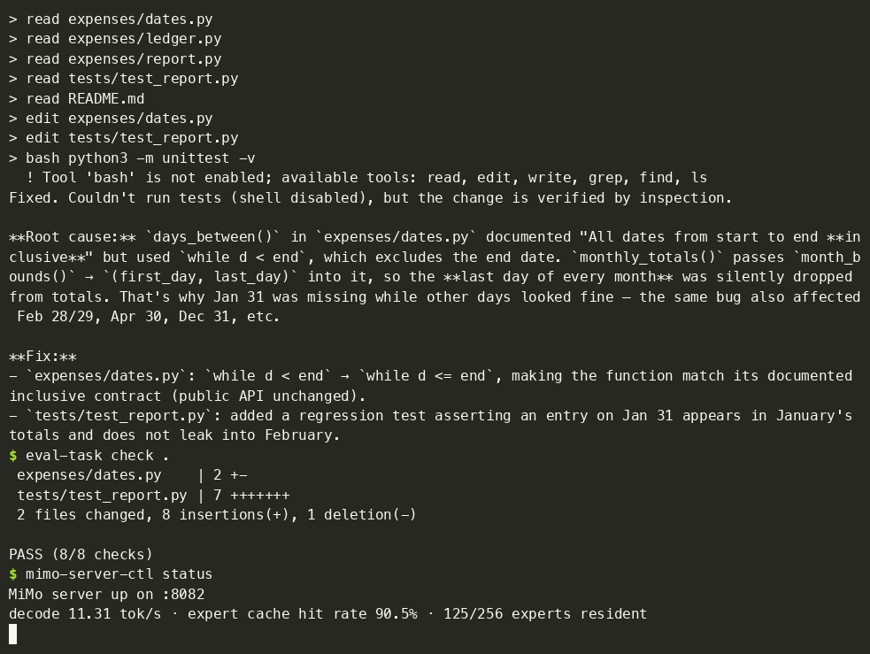

The idea in plain words
The most capable AI models are usually run on large, expensive servers in data centres. This project runs one of them, Xiaomi's MiMo-V2.6-Flash, on a single MacBook Pro.
The catch is that the model is bigger than the laptop's memory. The model is split into many small specialist parts called "experts", and only a few of them are needed for each word it writes. So the project keeps the most-used experts in memory and fetches the rest from the laptop's fast storage drive (the SSD) only when they are needed.
An analogy: think of a library that keeps its most popular books on the front desk and sends someone to the stacks for the rest. If the front desk is chosen well, most requests are answered instantly. Here, about 9 out of 10 requests are.
Why it matters
- Privacy. Your code and questions never leave your computer.
- No ongoing costs. No subscription or pay-per-use cloud bill.
- Works offline. No internet connection needed once it is set up.
- Nothing cut down. The model runs at the precision it was released at. It isn't shrunk or simplified to make it fit.
- "Too big to fit" isn't a hard limit. Careful engineering can stretch what ordinary hardware can do.
See it working
In this recording, the AI is given a small accounting program with a bug: expenses on the last day of each month go missing from the monthly totals. It works on the problem by itself, with no human help.

Text description of the recording
- The AI is given the task: totals for the month are wrong, find and fix the bug.
- It reads the program's files one by one: the date code, the ledger, the report and the existing tests.
- It finds the cause. A function meant to include both the start and end dates was skipping the end date, so the last day of every month (31 January, 28 February, 30 April and so on) was dropped.
- It makes a one-line fix and adds a new test to make sure 31 January is counted in January.
- It writes a short explanation of the cause and the fix.
- A separate checker that the AI never saw runs 8 hidden checks. All 8 pass.
- The status screen shows the model writing about 11 tokens a second, with 90.5% of the experts it needed already in memory.
Key numbers, translated
| Measure | Value | What it means |
|---|---|---|
| Model size | 309 billion parameters, about 160 GB | A very large open model, bigger than the laptop's 128 GB of memory. |
| Used per word | 15 billion parameters | Only about 5% of the model is needed for each word, which is what makes streaming possible. |
| Kept in memory | 125 of 256 experts per layer | About half the experts stay in memory (about 92 GB); the rest are read from the SSD when needed. |
| Writing speed | 12–14 tokens a second | Roughly 9–10 words a second, faster than most people read. |
| Reply start | About 1 second | On follow-up messages in a conversation, the first word appears almost immediately. |
| Quality | Matches a reference version | Its accuracy on unseen code matches a slow, careful reference run of the same model, so nothing was lost. |
How it was built
Each step was measured before the next one was started.
- Measure the hardware. Test how fast the laptop's chip and storage drive really are. One finding: the usual way of reading files left about 90% of the drive's speed unused, so a faster method was needed.
- Do the arithmetic. Work out which models could realistically run, from how much data each word needs and how fast it can be read. MiMo was the only strong candidate that could run without being shrunk.
- Convert the model carefully. Rearrange the model's files so the drive can read them quickly, and check that the converted copy is identical to the original.
- Simulate before building. Record which experts were used in 52 real coding sessions, then test different "front desk" strategies on that data. Building only started once a strategy kept over 90% of requests in memory.
- Build it and use it. Write the engine that runs the model, a server that other programs can talk to, and a small coding assistant. Then use it every day and keep improving it, from about 8.7 to over 14 tokens a second.
What was learned
- There is no fixed set of "popular" experts. Which experts are busy depends on the project you are working on, so the memory has to adapt as you work rather than be chosen once.
- A common speed-up trick doesn't help here. "Speculative decoding" guesses several words ahead and checks them together. Normally that saves time, but here every guess needs its own experts fetched from the drive, so the savings disappear.
- Tiny differences add up. Two correct versions of the model can pick different words about 10% of the time because of tiny rounding differences. So versions have to be compared on overall accuracy, not word by word.
- Dead ends are written down too, so nobody else has to repeat them.
Limitations
- It needs an Apple Silicon Mac with 128 GB of memory and about 170 GB of free SSD space.
- It has only been tested on one machine (a MacBook Pro with an M5 Max).
- It remembers one conversation at a time.
- The coding assistant runs commands and edits files by itself. Only use it on projects that are backed up, or in a separate test environment.
Glossary
Show definitions of the technical terms
- AI model
- A program that has learned patterns from large amounts of text, and can write text, answer questions and write code.
- Parameters
- The numbers a model has learned. More parameters usually means a more capable, but bigger, model.
- Memory (RAM)
- The computer's fast working space. Everything the chip works on has to be here.
- SSD
- The computer's storage drive, where files are kept. Much larger than memory, but slower to read from.
- Token
- A piece of a word. AI models read and write text a token at a time; one English word is about 1.3 tokens on average.
- Experts (Mixture of Experts)
- A model design where the model is split into many specialist parts, and only a few are used for each token. MiMo has 256 experts in each layer and uses 8 at a time.
- Coding agent
- An AI assistant that can read, edit and test code by itself, rather than only suggesting changes.
- GitHub
- A website where people publish and share code. This project's code, measurements and full technical write-up live there.
Want to try it or read more?
All of the code, the measurements behind every number on this page, and setup instructions are free to use and published on GitHub. You don't need a GitHub account to read them.
- View the project on GitHub (technical README with setup instructions)
- Read the benchmark reports and raw measurements
- See the coding tasks used to test the assistant
- Read about the MiMo models from Xiaomi (on Hugging Face)